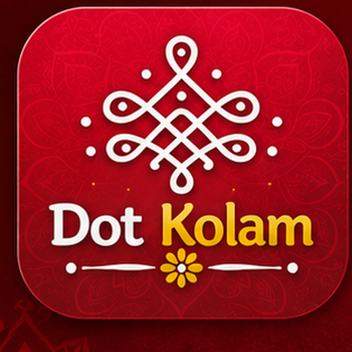
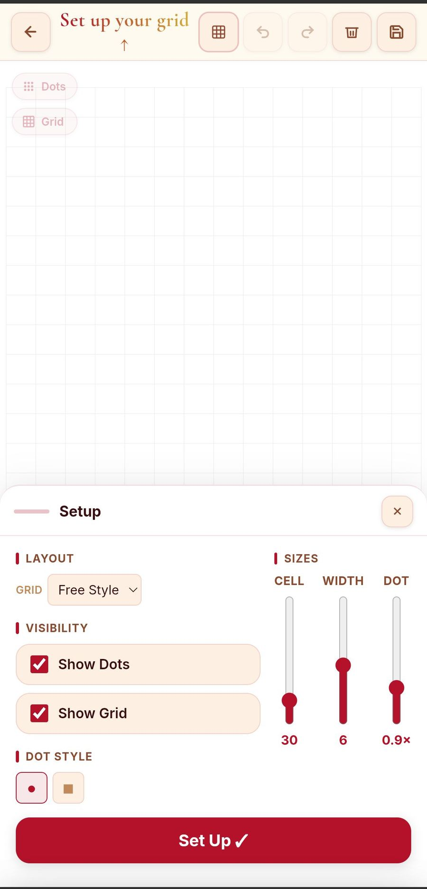
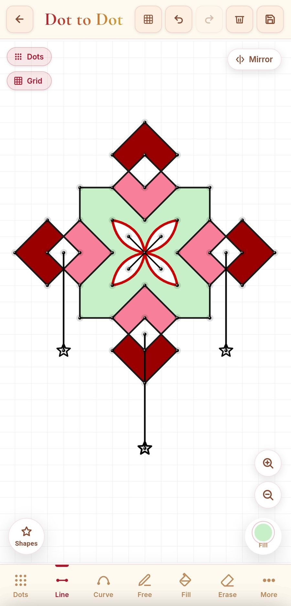
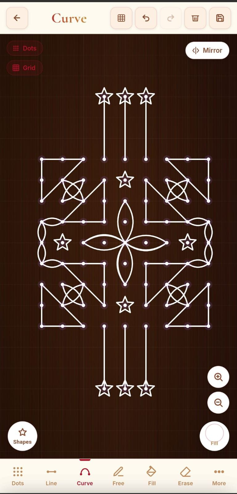
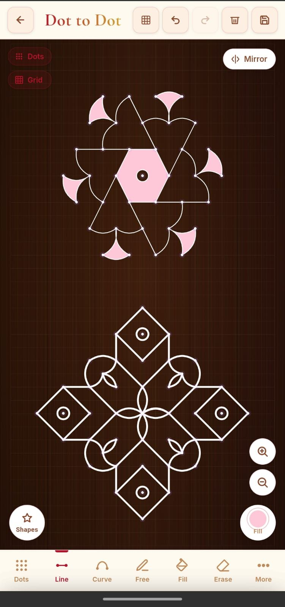
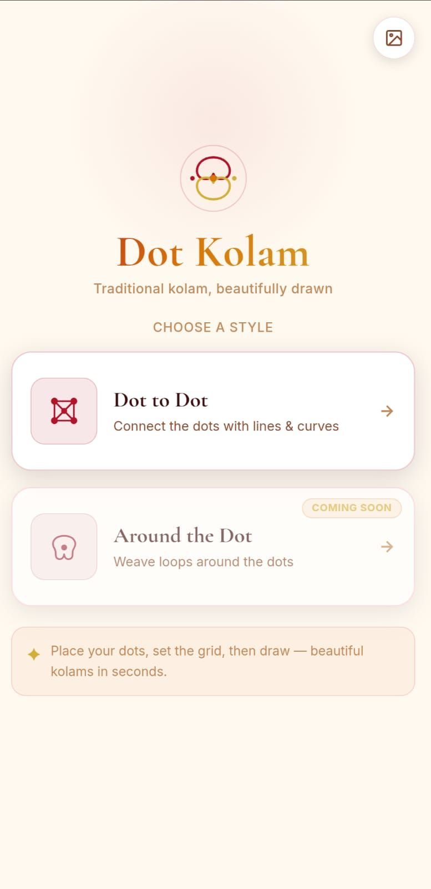

Traditional kolam, beautifully drawn — on Android.
Kolam is a traditional South Indian dot-grid art form, usually drawn by hand on the ground with rice flour. Dot Kolam brings the same idea to your phone: place a grid of dots, then connect them with lines and curves to build symmetric, decorative patterns — no artistic experience required.





Dot Kolam is published on Google Play under Clown Studio. "Around the Dot" (a second drawing style) is in development.
Follow Clown Studio for updates on Dot Kolam and future Android & web releases.